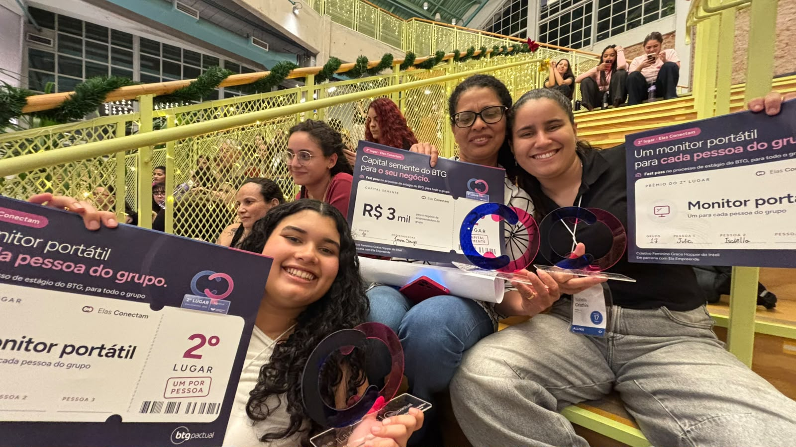
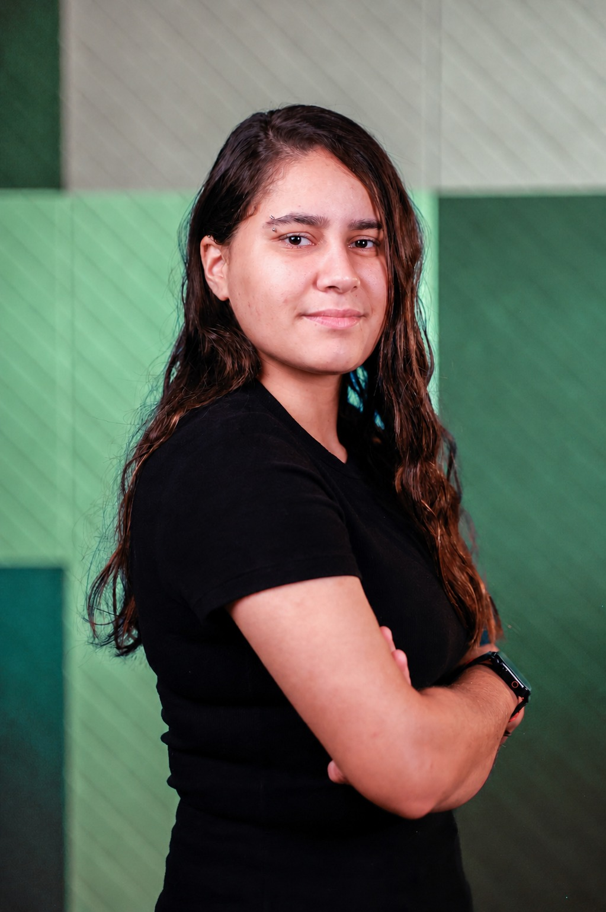
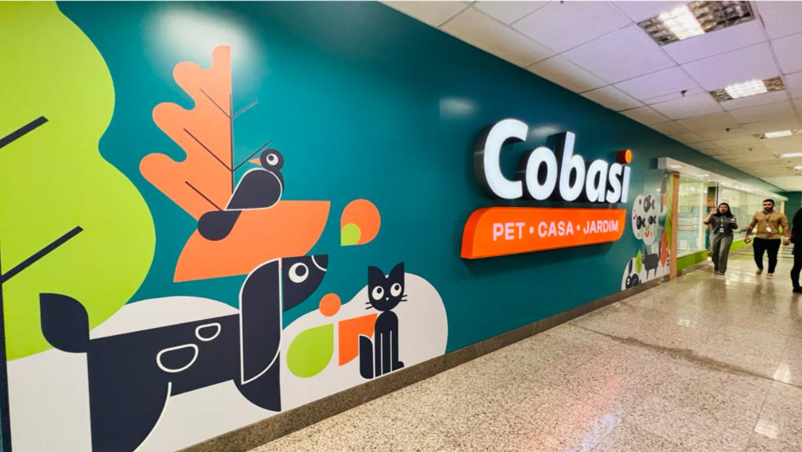
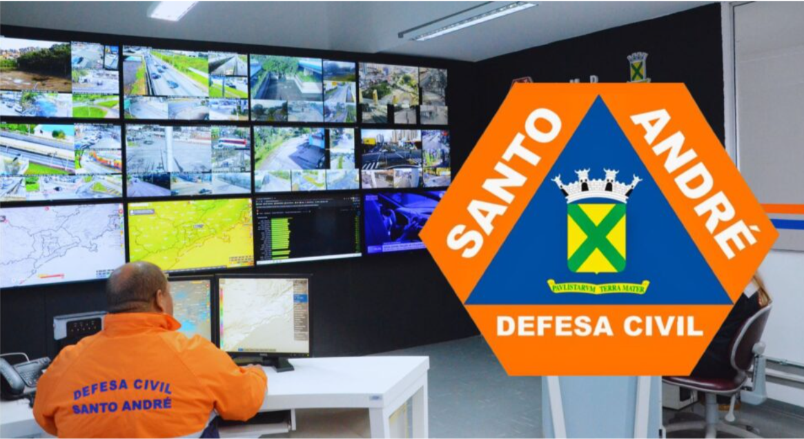
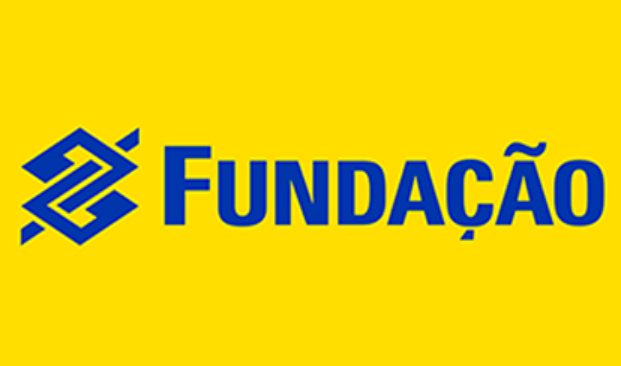

Uma conquista em equipe
2º lugar
Hackathon Elas Conectam
Fui finalista e conquistei o segundo lugar no hackathon Elas Conectam. Uma experiência de colaboração, criatividade e aplicação da tecnologia a desafios reais.
Sobre mim
Engenharia da Computação · Inteli
Entre a Engenharia da Computação, os projetos no Inteli e a Liga Atlética Tantera, gosto de aprender construindo e trabalhando em equipe.
Sou Isabella Cristhini Ferreira de Assis, graduanda no Inteli. Aprendo com projetos, trabalho em equipe e problemas reais. Meus interesses passam por programação, dados e inteligência artificial.
Organização, iniciativa e colaboração fazem parte do meu jeito de trabalhar. Quero continuar aprendendo e construir tecnologia com impacto positivo.

Espaços de troca, diversidade, pesquisa, esporte e colaboração.
Aberta a oportunidades
Minha trajetória
Da formação no Colégio Embraer à Engenharia da Computação no Inteli. Cada etapa faz parte de quem sou.
Instituto de Tecnologia e Liderança
Engenharia da Computação
Graduação baseada em projetos, com programação, desenvolvimento de sistemas, lógica e resolução de problemas reais.
Ensino Médio
Uma etapa de dedicação aos estudos, participação em projetos e preparação para seguir na área de tecnologia.

Uma conquista em equipe
2º lugar
Fui finalista e conquistei o segundo lugar no hackathon Elas Conectam. Uma experiência de colaboração, criatividade e aplicação da tecnologia a desafios reais.
Conquistas em matemática
Olimpíada Internacional · OIMSF
Tecnologia na prática
O que cada trabalho busca resolver, como a solução foi pensada e por que ela importa.
Escolha um projeto para explorar
LDC · Louis Dreyfus Company
Dados & Machine LearningProjeto em parceria com a Louis Dreyfus Company para apoiar o planejamento de commodities agrícolas no Brasil.
Objetivo: Antecipar a necessidade de ração, soja e seus derivados para apoiar decisões estratégicas.
O desafio Apoiar o planejamento estratégico da LDC, que comercializa commodities agrícolas e precisa antecipar o comportamento do mercado de proteína animal. Muitas informações estão disponíveis apenas em dados anuais, dificultando a análise das variações ao longo dos meses.
A solução Utilizar variáveis econômicas e informações históricas do setor para construir modelos de previsão da produção de aves, suínos, bovinos, ovos e leite. A partir dessas estimativas, a solução busca projetar o consumo de ração e a necessidade de matérias-primas da alimentação animal.
Minha experiência Atuação desde a pesquisa e a organização dos dados até o desenvolvimento da proposta de solução, conectando programação, análise de dados e inteligência artificial às necessidades reais do negócio.
Lar das Delícias
Gestão & atendimentoProposta de gestão para o negócio de alimentação inclusiva da empreendedora Jociara.
Objetivo: Reduzir tarefas manuais e dar mais autonomia para administrar e expandir o negócio.
O contexto Criado em 2016, o Lar das Delícias passou a oferecer alimentos inclusivos, sem leite, glúten e ovo. Jociara trabalha principalmente de casa e administra grande parte das atividades praticamente sozinha.
O desafio Informações de pedidos, entregas, estoque, clientes, receitas, pagamentos, custos e lucros estavam distribuídas em diferentes cadernos. O atendimento pelo WhatsApp, os orçamentos e as dúvidas frequentes também consumiam muito tempo da empreendedora.
A solução Reunir as principais atividades em um único sistema: facilitar o atendimento, organizar pedidos e entregas, controlar o estoque, armazenar informações de clientes e acompanhar as movimentações financeiras.
O propósito Reduzir o trabalho manual e otimizar o tempo de Jociara, respeitando a realidade de um pequeno negócio e oferecendo mais autonomia para administrar e expandir o Lar das Delícias.
Cobasi
Experiência digital
Projeto acadêmico voltado à experiência digital dos clientes da Cobasi.
Objetivo: Tornar a experiência mais prática e intuitiva para quem cuida de pets.
O desafio Centralizar informações e criar uma experiência prática para quem busca serviços, produtos e acompanhamento para seus pets.
A solução Uma plataforma digital que organiza as informações e facilita o acesso aos serviços, tornando a experiência mais intuitiva para os usuários.
Defesa Civil
Monitoramento de dados
Aplicação web para organizar informações e apoiar a atuação da Defesa Civil.
Objetivo: Apoiar ações preventivas e decisões em situações de risco.
O desafio Acessar rapidamente as informações necessárias para monitorar ocorrências e gerenciar situações de emergência.
A solução Uma plataforma para centralizar dados e acompanhar informações em tempo real, facilitando a visualização de ocorrências e a comunicação entre equipes.
Fundação BB · Fundação Banco do Brasil
Energia & impacto social
Projeto com a Fundação Banco do Brasil voltado a instituições em situação de vulnerabilidade socioeconômica.
Objetivo: Promover sustentabilidade e ampliar a autonomia financeira das entidades.
O desafio Reduzir os gastos com energia elétrica de instituições de baixa renda, preservando recursos para o atendimento às comunidades.
A solução Desenvolver e distribuir equipamentos de energia solar térmica com mecanismos simples e materiais acessíveis, ampliando a autonomia financeira das entidades atendidas.
Em constante aprendizado
Ferramentas e habilidades que desenvolvo durante a graduação e nos projetos.
Próximo passo
Estou aberta a oportunidades, projetos e novas conexões. Me conta o que você tem em mente.